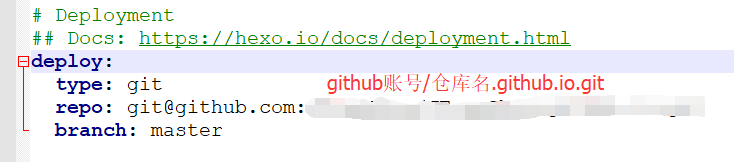
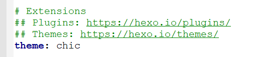
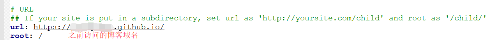

很长时间没有动hexo博客，于是最近想重新拾起，并且把博客迁移到github上，不再使用开源中国的部署，并且为博客更换主题。下面介绍一下大致的迁移流程。
流程：
- 首先，需要注册个github账号，并且在github上新建仓库，命名为:你的guthib帐户名.github.io（注意：项目应该设置为共有public权限，否则访问页面失败。）
- 下载git客户端，设置ssh key将客户端与github账户绑定(具体步骤看git ssh配置)
- 安装hexo，具体步骤在之前的安装hexo并部署到oschina里面已经描述清楚。
部署到github，设置项目根目录下的_config.yml文件如下:
然后安装插件
npm install hexo-deployer-git --save接下来直接执行以下命令进行部署:
1
2
3
4
5
6hexo clean
# 清除本地之前发布生成的文件
hexo g
# 重新生成发布文件
hexo d
# 进行部署发布访问https://你的github账号.github.io/，就可以看到hexo部署完成。
主题更换，我使用的是chic，更换步骤如下：
8.1 git bash进入博客所在目录下的themes文件夹，将chic在github上的项目clone下来:$ git clone https://github.com/Siricee/hexo-theme-Chic.git
8.2 编辑博客目录下的_config.yml文件:


8.3 重新执行hexo的部署命令，访问博客地址，即可看到新的主题已经部署成功。